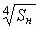
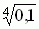
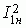
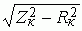
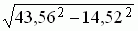

4. МОДЕЛИРОВАНИЕ ТРАНСФОРМАТОРА В СРЕДЕ EWB (MS8)
В библиотеках программ EWB и MS8 имеется модель нелинейного однофазного трансформатора. После "перетаскивания" на рабочее поле и двойного щелчка мышью на его изображении открывается окно с полями: Model, New Lybrary, Edit, Copy, Rename и др. Согласно варианту (см. табл. 18.1) выберите тип трансформатора, например, ОСМ-0,1/0,22 (номинальная мощность Sн = 0,1 кВ·А = 100 В·А; номинальное первичное напряжение U1н = 0,22 кВ = 220 В) и вставьте его обозначение в библиотеку вместо, например, модели pq-4-10 (выделите её, щёлкните на кнопке Rename, введите тип вашего трансформатора - ОСМ-0,1/0,22, щелкните на кнопке OK). Затем следует щелкнуть мышью по кнопке Edit и ввести последовательно предварительно рассчитанные параметры трансформатора и несколько координатных точки кривой намагничивания В(Н) материала сердечника (например, четыре точки для холоднокатаной стали 3411):
- число витков первичной обмотки (Primary turns)w1 = U1н/(4,44fBмSм) = 220/(4,44·50·1,3·0,00054) ≈ 1412,
где Sм = k·0,8d2 = 0,75 · 0,8 · 0,032 = 0,00054 м2 - площадь поперечного сечения сердечника (Cross-sectional area); f = 50 Гц - частота напряжения сети; Bм ( 1,3 Тл - рекомендованная магнитная индукция в магнитопроводе (при мощности Sн < 16 кВ·А); k = 0,75 – коэффициент заполнения железом магнитопровода; d ≈ 0,055 = 0,055 · · 0,03 м - диаметр стержня; Sн- номинальная мощность трансформатора в кВ · А;
- активное сопротивление первичной обмотки (Primary resistance)
R1 =Rк/2 = 7,26 Ом,
где Rк = Pм/= 3/0,45452 = 14,52 Ом; I1н = Sн/U1н = 100/220 = 0,4545 A;
- индуктивность рассеяния первичной обмотки (Primary leakage inductance)
L1 = X1/ω = 20,55/314 = 0,065 Гн,
где X1= Xк/2 = 20,55 Ом; Xк = = = 41,1 Ом; Zк = Uк/I1н = 19,8/0,4545 = 43,56 Ом; Uк = uкU1н/100 = 9· 220/100 = 19,8 B;
- число витков вторичной обмотки (Scondary turns)
w2 = w1/n = 1412/6,11 = 231,
где n = U1н/U2 н = 220/36 = 6,11; U2 н = 36 В;
- активное сопротивление вторичной обмотки (Scondary resistance)
R2 = Rк/(2n2) = 7,26/6,112 = 0,195 Ом;
- индуктивность рассеяния вторичной обмотки (Scondary leakage inductance)
L2 = X2/(ωn2) = 20,55/(314 · 6,112) = 0,00175 Гн;
- площадь поперечного сечения сердечника (Cross-sectional area)
Sм = 0,00054 м2
- длина средней м. с. л. в сердечнике (Core Length)
lм = I0w1/H1,3 = 0,11 ·1412/190 = 0, 817 м,
где I0 = i0I1н/100 = 24 · 0,4545/100 = 0,11 A; H1,3 ≈ 190 А/м – напряжённость магнитного поля для электротехнической стали 3411 при Bм = 1,3 Тл;
- коэффициент ISD = 1;
- число координатных точек таблицы кривой намагничивания В(Н) (Numder of coordintes) 4:
- напряжённость магнитного поля в первой точке (Magnetic field coordinate 1) Н1 = 0;
- магнитная индукция в первой точке (Flux density coordinate 1) В1 = 0;
- напряжённость магнитного поля во второй точке (Magnetic field coordinate 2) Н2 = 200 А;
- магнитная индукция во второй точке (Flux density coordinate 2) В2 = 1,34 Вб/м2;
- напряжённость магнитного поля в третьей точке (Magnetic field co-ordinate 3) Н3 = 500 А;
- магнитная индукция в третьей точке (Flux density coordinate 3) В3 = 1,46 Вб/м2.
- напряжённость магнитного поля в четвёртой точке (Magnetic field coordinate 4) Н4 = 1000 А;
- магнитная индукция в четвёртой точке (Flux density coordinate 4) В4 = 1,52 Вб/м2.